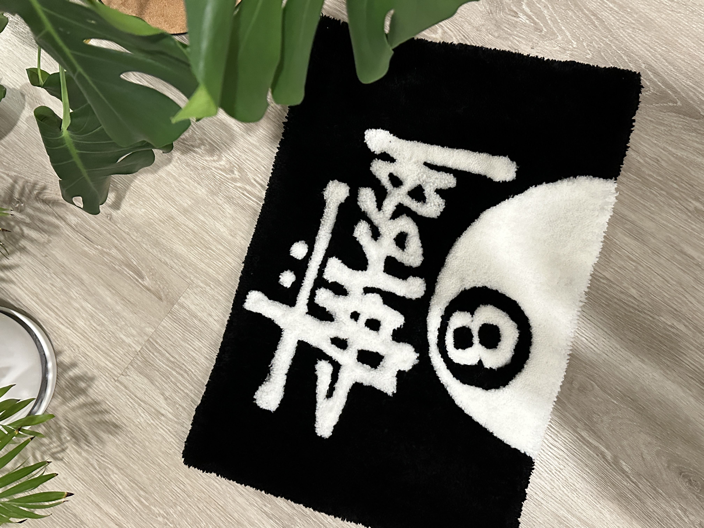
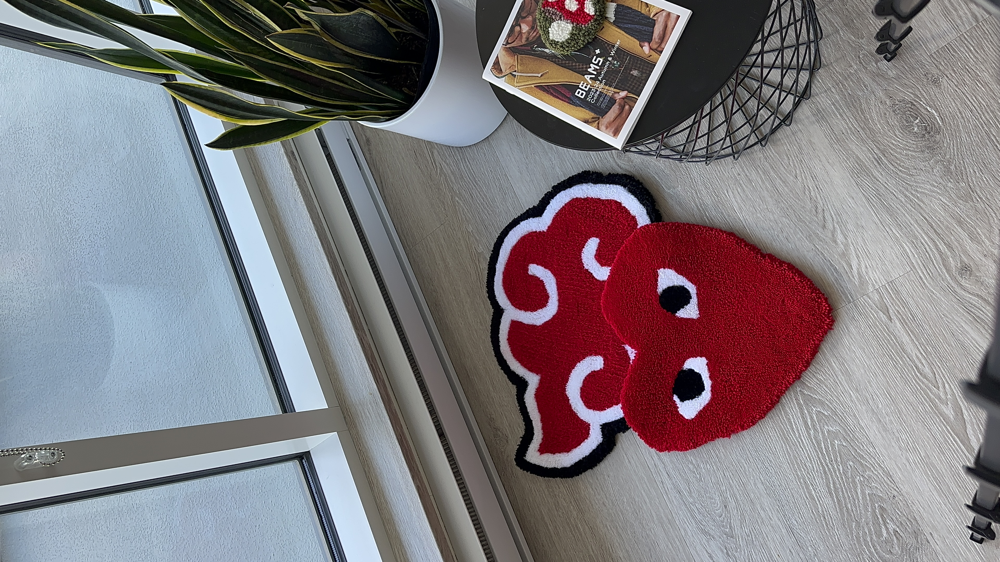

Welcome to the Grove 🌳
Tuft Grove specializes in crafting customized rugs, tailored to your unique style and preferences, adding a touch of personalized elegance to any space..
More Work Below👇

How it started 🖌
Chris, a Canadian-born designer with a penchant for crafting by hand, stumbled upon the world of custom rug making while scrolling through TikTok. Intrigued, he ordered supplies and yarn, all while pursuing further education in UX at post-secondary. As he began creating custom rugs for friends, his passion for the craft blossomed.
Soon, he started taking commissions, and after walking into a quaint street corner store, he found himself crafting a custom rug for Shiki Menya, a popular Japanese ramen restaurant nestled in Bridgeland, Calgary, Alberta.
Past Work
-

Cop on Sight
Adrian Herras
Explore Cop On Sight, owned by Adrian Herras, offering a curated selection of vintage apparel in Calgary, Alberta.
-

Sun Flower
Malia Rose
A custom rug for Malia of a Sun Flower. This rug is 100% Acrylic made with premium materials.
-

Stussy 8 Ball
Ashton Fisher
The iconic Stussy 8 ball logo originated from the surf and skate culture of Southern California, specifically from the brand Stussy founded by Shawn Stussy in the 1980s.
-

Comme des Garçons
Leo Serrano
Comme des Garçons, a high-end fashion label, was founded in Tokyo, Japan, in 1969 by designer Rei Kawakubo. The brand is renowned for its avant-garde designs and innovative approach to fashion.